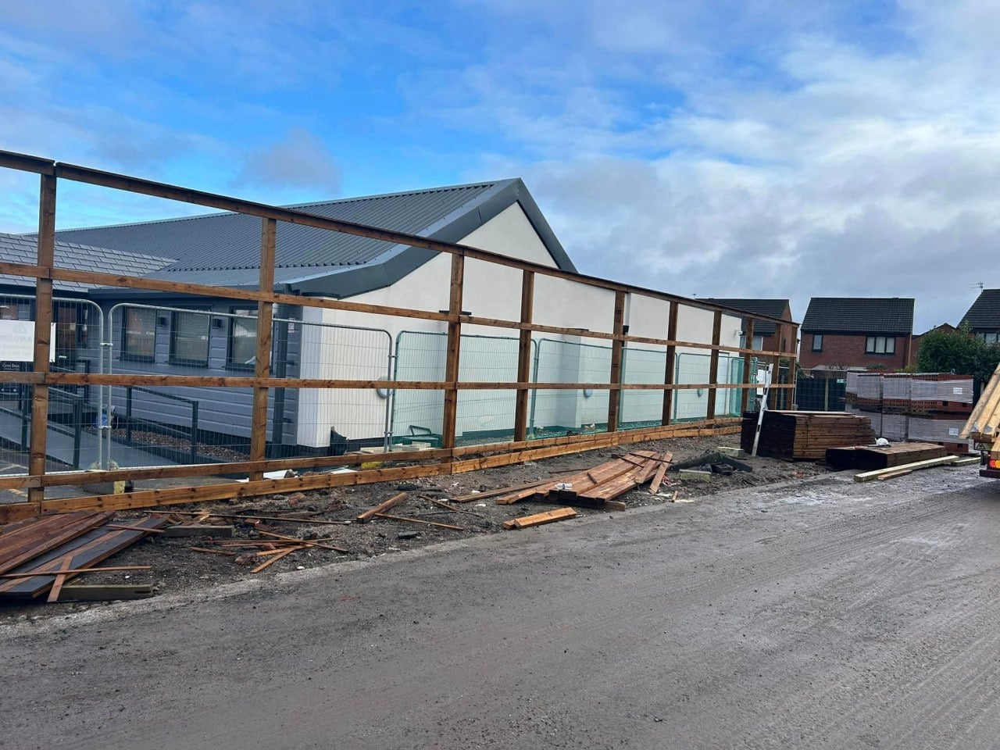

Liverpool's Leading Commercial Fence Contractors
Secure your business with professional commercial fencing solutions
Expert Commercial Fencing Liverpool Installation
When it comes to commercial fencing Liverpool, RCT Fencing is the trusted choice for businesses across Liverpool, Waterloo, and the North West. Our commercial fence Liverpool installations protect your business premises while meeting all compliance and security requirements.
As experienced commercial fencing contractors Liverpool, we specialize in industrial fencing Liverpool for warehouses, schools, offices, retail parks, and manufacturing facilities. Our commercial fence Liverpool solutions combine robust security with professional appearance.
- High-Security Commercial Fencing Liverpool
- Industrial & Warehouse Fencing
- Educational Facility Perimeter Fencing
- Compliant & Insured Installation
